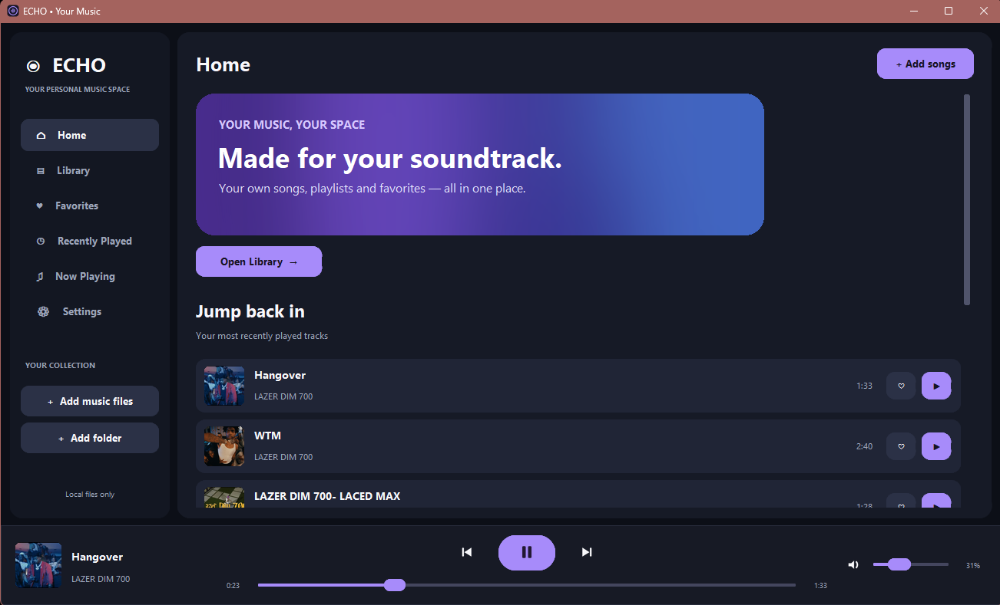

Your own library
Keep your favorite MP3s and other supported local audio files together. No account required.
A home for the songs you love. Your own local library, gorgeous album art, and powerful sound controls — without the noise.
Made with Python. Built with care. Free to explore.
ECHO gives your local music the kind of home it deserves.
Keep your favorite MP3s and other supported local audio files together. No account required.
Dial in your sound with real bass boost and a 10-band equalizer powered by VLC.
Album covers, favorite songs, recently played tracks, and quick access to your collection.
A real desktop app, complete with song-change notifications and its own music-player window.
Real screenshots from ECHO's development, built and tested on Windows.

Screenshot from an earlier ECHO build. The app is still evolving.
ECHO started as a beginner Python project and grew into a fully fledged personal music player. It's an experiment in coding, design, and making software that feels like your own.
No giant platform. No complicated setup. Just your music and a place to enjoy it.
A downloadable Windows version is planned. For now, ECHO runs as a Python desktop app.
When you package ECHO as an .exe, this button can link straight to it.